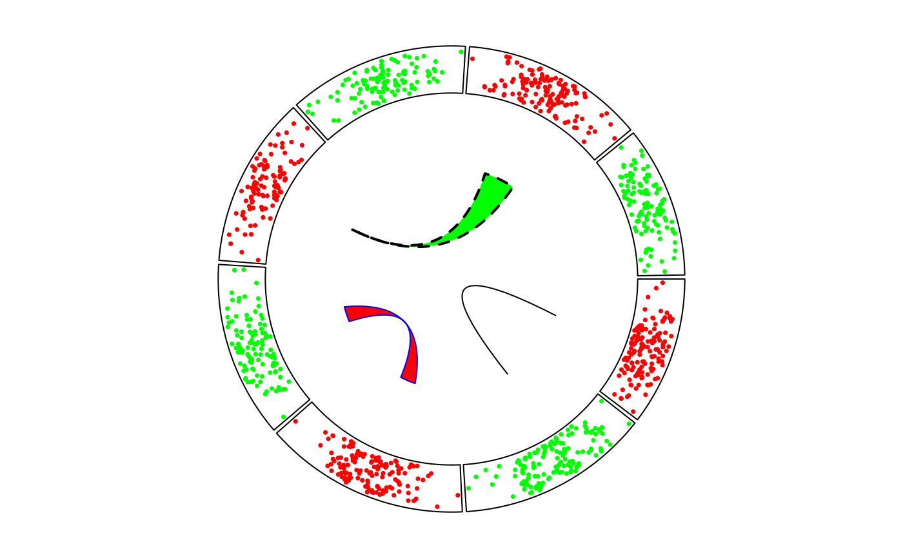

Object ccLink will call the function circlize::circos.link while drawing.
Usage
ccLink(
sector.index1,
point1,
sector.index2,
point2,
rou = get_most_inside_radius(),
rou1 = rou,
rou2 = rou,
h = NULL,
h.ratio = 0.5,
w = 1,
h2 = h,
w2 = w,
inverse = FALSE,
col = "black",
lwd = par("lwd"),
lty = par("lty"),
border = col,
directional = 0,
arr.length = ifelse(arr.type == "big.arrow", 0.02, 0.4),
arr.width = arr.length/2,
arr.type = "triangle",
arr.lty = lty,
arr.lwd = lwd,
arr.col = col,
reduce_to_mid_line = FALSE
)Arguments
- sector.index1
Index for the first sector where one link end locates
- point1
A single value or a numeric vector of length 2. If it is a 2-elements vector, then the link would be a belt/ribbon.
- sector.index2
Index for the other sector where the other link end locates
- point2
A single value or a numeric vector of length 2. If it is a 2-elements vector, then the link would be a belt/ribbon.
- rou
The position of the the link ends (if
rou1androu2are not set). It is the percentage of the radius of the unit circle. By default its value is the position of bottom margin of the most inner track.- rou1
The position of end 1 of the link.
- rou2
The position of end 2 of the link.
- h
Height of the link, measured as percent to the radius to the unit circle. By default it is automatically infered.
- h.ratio
systematically change the link height. The value is between 0 and 1.
- w
Since the link is a Bezier curve, it controls the shape of Bezier curve.
- h2
Height of the bottom edge of the link if it is a ribbon.
- w2
Shape of the bottom edge of the link if it is a ribbon.
- inverse
Whether the link is inversed.
- col
Color of the link. If the link is a ribbon, then it is the filled color for the ribbon.
- lwd
Line (or border) width
- lty
Line (or border) style
- border
If the link is a ribbon, then it is the color for the ribbon border.
- directional
0 for no direction, 1 for direction from
point1topoint2, -1 for direction frompoint2topoint1. 2 for two directional. The direction is important when arrow heads are added.- arr.length
Length of the arrows, measured in 'cm', pass to
Arrowhead. Ifarr.typeis set tobig.arrow, the value is percent to the radius of the unit circle.- arr.width
Width of the arrows, pass to
Arrowhead.- arr.type
Type of the arrows, pass to
Arrowhead. Default value istriangle. There is an additional optionbig.arrow.- arr.lty
Line type of arrows, pass to
Arrowhead.- arr.lwd
Line width of arrows, pass to
Arrowhead.- arr.col
Color of the arrows, pass to
Arrowhead.- reduce_to_mid_line
Only use the middle points of
point1andpoint2to draw the link.
Value
Object ccLink
Examples
library(circlizePlus)
set.seed(999)
n = 1000
df = data.frame(sectors = sample(letters[1:8], n, replace = TRUE),x = rnorm(n), y = runif(n))
cc = ccPlot(initMode = "initialize", sectors = df$sectors, x = df$x)
track1 = ccTrack(df$sectors, y = df$y)
col = rep(c("#FF0000", "#00FF00"), 4)
tPoint1 = ccTrackPoints(df$sectors, df$x, df$y, col = col, pch = 16, cex = 0.5)
link1 = ccLink("a", 0, "b", 0, h = 0.4)
link2 = ccLink("c", c(-0.5, 0.5), "d", c(-0.5,0.5), col = "red",border = "blue", h = 0.2)
link3 = ccLink("e", 0, "g", c(-1,1), col = "green", border = "black", lwd = 2, lty = 2)
cc + (track1 + tPoint1) + link1 + link2 + link3
